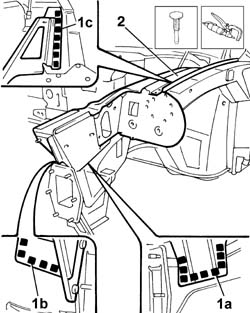
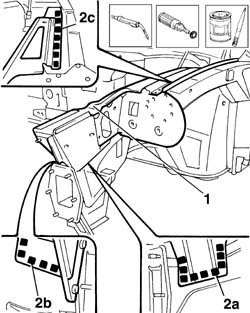

7210A30 FRONT WING MOUNTING BRACKET
- Path
- Procedures > 72 panels and frames > 7210 REMOVING REFITTING > 7210A structural elements (front part) > 7210A30 FRONT WING MOUNTING BRACKET
- Kind
- repair procedure (removal / refitting; the operation number is the code)
- Applies to
- all engines; all production periods
- Interactive page
- https://sloeber94.github.io/elrnDB-lThss/en/#/501016
Applies to: all engines; all production periods
Applies to: all engines; all production periods
 Removing
Removing
 Refitting
Refitting1. Using a chamfering machine and a drill, remove the spot welds in areas (1a), (1b) and (1c).
2. Using a hammer and chisel, detach the front wing mounting bracket and remove it.

Applies to: all engines; all production periods
Refitting
Removing- Straighten the edges of the panel along the surface of the bodyshell involved.
- Thoroughly clean the perimeter of the bodyshell involved and apply electro-galvanizing paint.
1. Remove the anti-corrosion treatment along the perimeter of the replacement part using a rotary brush and apply electro-galvanizing paint.
- Position the replacement part and secure it using self-locking clamps.
2. Weld at points (2a), (2b) and (2c).

Applies to: all engines; all production periods
- Grind the welds using a disc grinder.
- Check that the welded component is correctly positioned.
- Apply electro-galvanizing paint.